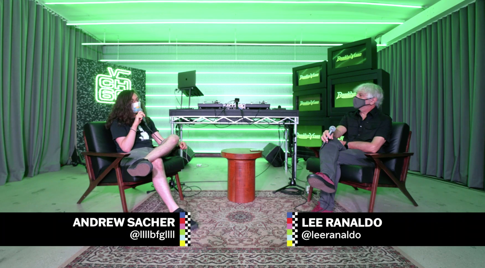

Andrew Sacher
About
Work
Contact
You can find much of my writing on BrooklynVegan in my weekly album reviews column
Notable Releases
and my punk column
In Defense of the Genre
.
And check out more of my interviews on
The BrooklynVegan Podcast
.
Interviews / Features
Bad Brains interview: Darryl Jenifer discusses the band's classic '80s records
Scowl interview: "I wanna be a hardcore kid writing pop songs"
The Wonder Years on fatherhood, Mark Hoppus, and making a record that's RIYL The Wonder Years
The Interrupters helped re-popularize ska-punk. Now they've made the most personal album of their career
The Callous Daoboys interview: "I don't want to be this middling heavy band, I wanna be The 1975"
Soul Glo are paving the path to punk's future
PUP interview
Joyce Manor interview
David Crosby interview
Anthony Green (Circa Survive) interview
mewithoutYou grew, faced turmoil, and made their best album in years
Manchester Orchestra interview
Meat Puppets interview
Interview with Foxing on 'Nearer My God'
Interviews with Mike & Tim Kinsella on Cap'n Jazz, American Football & more
Album Retrospectives
The Beach Boys albums ranked
AFI's 'Sing the Sorrow' at 20
Title Fight's 'Floral Green' at 10 - the story behind a landmark of modern punk & hardcore
Box Car Racer turns 20: a look back on blink-182's crucial post-hardcore side project
Taking Back Sunday's 'Tell All Your Friends' at 20
Every Time I Die: a look back at 20+ years of metalcore innovation
Jimmy Eat World's 'Bleed American' at 20
blink-182's 'Take Off Your Pants and Jacket' turns 20 - the tense turning point of their peak era
Thursday's 'Full Collapse' at 20
American Football's LP1 at 20
Minus The Bear albums ranked
mewithoutYou albums ranked
Rancid albums ranked
Black Flag albums ranked
blink-182 albums ranked
Paramore album guide
'Insomniac' is Green Day's best album
All 101 songs on 'Short Music For Short People,' reviewed
Other Articles / Lists
Ska is thriving right now. Here's a look at the DIY scene that's keeping it alive
The road to 'Glow On' - a guide to Turnstile's back catalog
10 years ago, the new wave of post-hardcore made its mark
15 '80s punk albums that shaped the '90s/'00s pop punk boom
'Emo Revival' & how 'Indie Rock' was already 'Emo' (or vice versa)
12 classic ska-punk albums to prepare you for the ska-punk revival
100 Best Punk & Emo Albums of the 2010s
A look back on 10 classic pop punk bands' "mature" albums
Audio / Video
The BrooklynVegan Show Podcast
Ska Lives! The Continued Legacy of American Ska

Interview with
Lee Ranaldo
on
Vans Channel 66
(8/12/21)
Podcast Appearances
In Defense of Ska
Endless Scroll
Ska Punk International
Ska Boom
The Pitch of Discontent
(blink-182's untitled 20th anniversary episode)
Sunday Conversations
Washed Up Emo